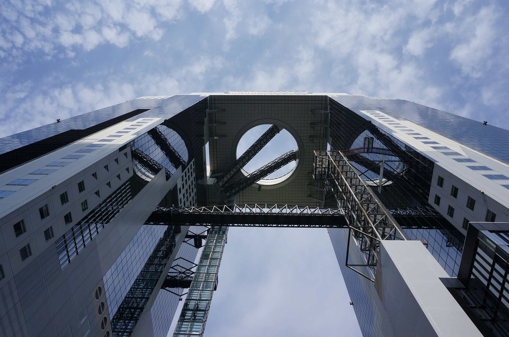

Osaka Highlights
Look at these full-size photos of Osaka!
Home
Attractions
Local Foods
Photos
Hachikenya Pier with Temmabashi Station.
Sunset in Dontonbori.
More of Osaka Castle Park's entryway.
Imagine looking out of the Kiyomizu-dera temple, wouldn't that be nice?
More Dontonbori street!

Look up at the Umeda Sky Building!